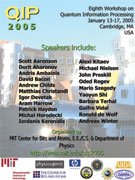

General information
Schedule
Registration
Accomodation
Travel information
Local information


Unless otherwise mentioned, all events will be in the Stata Center. Talks are in room 32-123.
Thursday, Jan. 13
| 8:00am-9:00am | Registration |
| 9:00am-9:20am | Introduction |
| Morning session Chair: Julia Kempe | |
| 9:20am-10:10am | Andrew Childs - Optimal measurements for the dihedral hidden subgroup problem |
| 10:10am-10:30am | Coffee break sponsored by the Journal of Physics A. |
| 10:30am-11:20am | Sean Hallgren - A Quantum Algorithm for Computing Some Hidden Subgroups of the Symmetric Group |
| 11:20am-12:10pm | David Bacon - Value Added Multipartite Quantum Correlations |
| 12:10am- 2:00pm | Lunch |
| Afternoon session Chair: Michele Mosca | |
| 2:00pm- 2:50pm | Mario Szegedy - Quantum Speed-up of Markov Chain Based Algorithms |
| 2:50pm- 3:40pm | Dorit Aharonov - On the quantum algorithm for approximating the Jones polynomial |
| 3:40pm- 4:10pm | Coffee break sponsored by the Journal of Physics A. |
| 4:10pm- 5:00pm | Michael Nielsen - Fault-tolerant quantum computation with cluster states |
| 6:00 PM - 8:00 PM | Welcome reception sponsored by Hewlett-Packard (Cambridge Marriott) |
Friday, Jan 14
| Morning session Chair: Daniel Gottesman | |
| 9:00am-9:50am | John Preskill - The cost of quantum fault tolerance |
| 9:50am-10:20am | Break |
| 10:20am-11:10am | Barbara Terhal - Fault-Tolerant Quantum Computation for Local Noise Models |
| Contributed Talks I | |
| 11:10am-11:30am | Krysta Svore -Local Fault-tolerant Quantum Computation |
| 11:30am-11:50am | Andrew Doherty - Entanglement gap, monogamy of entanglement and quantum de Finetti theorems |
| 12:00pm- 2:00pm | Lunch |
| Afternoon session Chair: Debbie Leung | |
| 2:00pm-2:50pm | Alexei Kitaev - 2-local Hamiltonian is QMA-complete |
| 2:50pm- 3:40pm | Michal Horodecki - Entanglement: drawing private key, locking by single qubit and erasing |
| 3:40pm- 4:10pm | Break |
| 4:10pm- 5:00pm | Guifre Vidal - Entanglement and the simulation of quantum systems |
| 5:20pm 5:40pm | Shuttle pick up from the Stata Center to the Museum of Science |
| 6:00pm | Force of Nature IMAX movie at Boston Museum of Science |
| 6:30pm | Banquet at Museum of Science |
| 8:20pm 8:40pm 9:00pm | Shuttle pick up from the Museum of Science to the Stata Center |
Saturday Jan 15
| Morning session Chair: Harry Buhrman | |
| 9:00am-9:50am | Jordan Kerenidis - On the power of quantum multiparty communication complexity |
| 9:50am-10:20am | Break |
| 10:20am-11:10am | Yaoyun Shi - Tensor norms and the classical communication complexity of nonlocal quantum measurement |
| 11:10am-12:00pm | Oded Regev - On Lattices, Learning with Errors, Random Linear Codes, and Cryptography |
| 12:00pm- 2:00pm | Lunch |
| Afternoon session Chair: Isaac Chuang | |
| Contributed talks II | |
| 2:00pm-2:20pm | Joseph Traub - Algorithms and Complexity for Continuous Problems |
| 2:20pm-2:40pm | Dimitry Gavinsky - Quantum Communication Cannot Simulate a Public Coin |
| 2:40pm-3:00pm | Seiichiro Tani - Exact Quantum Algorithms for the Leader Election Problem |
| 3:00pm-3:20pm | Jean-Christian Boileau - Performance of the Three State Quantum Key Distribution Protocol |
| 3:20pm-3:40pm | John Yard - Capacity theorems for quantum multiple access channels |
| 4pm-6pm | Poster session
We will provide 36" x 48" boards on which your posters (which can be taller, but not wider) may be mounted. |
| 7pm | Open for group event(s) |
Sunday Jan 16
| Morning session Chair: Peter Shor | |
| 9:00am-9:50am | Andreas Winter - Entanglement of assistance and applications to multi-user quantum information theory |
| 9:50am-10:20am | Break |
| 10:20am-11:10am | Patrick Hayden - The Remarkable Ubiquity of Entanglement |
| 11:10am-12:00pm | Igor Devetak - Quantum Shannon Theory: Overview and Recent Results |
| 12:00pm- 2:00pm | Lunch |
| Afternoon session Chair: Richard Cleve | |
| 2:00pm-2:50pm | Matthias Christandl - On the (Im)Possibility of Quantum String Commitment |
| Contributed talks III | |
| 2:50pm-3:10pm | Andrew Scott - Classical and quantum fingerprinting strategies |
| 3:10pm-3:30pm | Jose Latorre - Scaling of entanglement and quantum computation |
| 3:30pm- 3:50pm | Break |
| 3:50pm-4:10pm | Samuel Kutin - A new quantum ripple-carry adder |
| 4:10pm-4:30pm | Scott Glancy - Quantum Computation with Optical Coherent States |
| 4:30pm-4:50pm | Martin Plesch - Reconstruction of quantum channels from incomplete data |
| 6pm | Reception (Media Laboratory: CBA) |
Monday Jan 17
| Morning session Chair: Miklos Santha | |
| 9:00am-9:50am | Ronald de Wolf - Direct Product Theorems and Optimal Time-Space Tradeoffs |
| 9:50am-10:20am | Break |
| 10:20am-11:10am | Aram Harrow - Efficient Quantum Circuits for Schur and Clebsch-Gordan transforms |
| 11:10am-12:00pm | Scott Aaronson - The Amazing Power of Postselection |